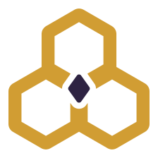
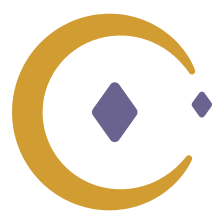
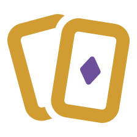
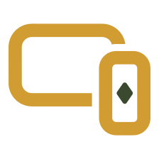
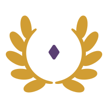
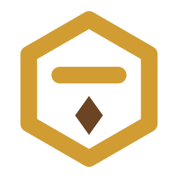
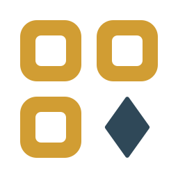

HUB
Le tableau de bord central : recherche globale, rail par familles, rappels et lecteur persistant. Il ouvre tout le reste.
DashboardPWATypeScript
Portfolio · Oria
Oria est un tableau de bord unique qui réunit mes outils et mes jeux : un assistant, un simulateur de cartes, une télécommande, un RPG de progression. Chaque app a son symbole, tous partagent la même abeille.
Sept apps, un même nid : le corps doré de l'abeille et un losange reviennent dans chaque logo.

Le tableau de bord central : recherche globale, rail par familles, rappels et lecteur persistant. Il ouvre tout le reste.

L'assistante d'Oria : chat vocal, agents, tri de fichiers, prompts et génération d'images.

Simulateur de boosters : ouverture au doigt, effets holographiques en 3D, classeur, Pokédex et succès, en six langues.

Une télécommande pour piloter le PC depuis le téléphone, par le réseau privé.

Un RPG de vie : stats, compétences, quêtes du jour, séries et suivi des séances de sport.

Une alvéole scellée à la cire pour garder l'important, avec le losange en trou de serrure.

La grille de toutes les apps, dont la quatrième case est le losange d'Oria.
Je m'appelle Paulin. Oria est né d'une envie simple : avoir un seul endroit, beau et calme, qui rassemble ce que j'utilise et ce que je crée.
Je dessine les logos, l'interface et le code. Le design vient de la nature : nid d'abeille, miel, papier grainé, enluminure. L'élégance sans l'excès.
Tout tourne en local, sur mon propre disque, avec très peu de dépendances.
Écrivez-moi, je réponds avec plaisir.